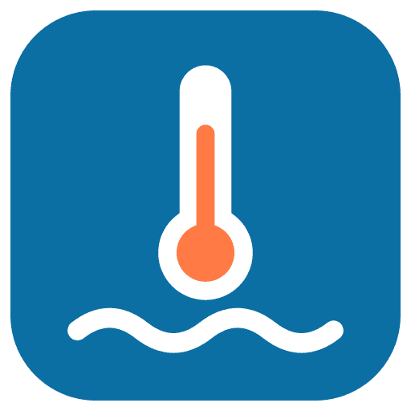

SwissWaterTemps
Every Swiss lake and river, live.
Water temperatures from BAFU gauges, cantonal sensors and lake buoys. One search away.
Tap a lake. See its week.
7 days, 30 days or a year, plus flow, water level and flood danger where BAFU measures.